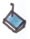

Bienvenidos a dorkbot-tucu (Tucuman, Argentina)
Como bola de nieve o para ser más coherentes con el clima local, como alud bajando de la montaña, se viene el Dorkbot Tucumán. Ah, ¿que es Dorkbot?, ya les cuento. ¿Que es Tucumán? nunca lo sabremos.
¿Qué es un Dorkbot?
Dorkbot es una red mundial de gente que hace cosas raras con la electricidad. Hablamos de producciones relacionadas o no con las artes: aparatos sonoros, visuales, luminotecnia, instalaciones, intervenciones y performances, hardware hacking, robótica, videoarte, aplicaciones de software libre, música algorítmica, lo que sea que destelle, se mueva o haga ruido usando la electricidad.
Los encuentros Dorkbot vienen teniendo lugar en distintas partes del mundo. Y han encontrado sitio y fecha en Tucumán, Argentina. Sí, señores, hablamos del primer Dorkbot en Argentina.
¿Cómo hacer para participar?
Antes que nada, te situamos: contamos con salas de un espacio cultural con mesones, sillas, pizarra. Toma-corrientes, un proyector, una consola de 6 canales de audio.
Podés ser parte de Dorkbot Tucumán de distintas maneras:
-
Organizando una charla de no más de 40 minutos donde cuentes (y muestres si cabe) lo que estás haciendo con la electricidad. Un aparato, un robot, un proyecto vinculado al arte y tecnología, en fin, escuchamos propuestas. La idea es comunicar en forma amena y si se quiere, informal, lo que nos apasiona.
A modo de referencia, te mostramos un charla en el Dorkbot Madrid: http://www.youtube.com/watch?v=ZzmH4t8qp74
Presentando una obra visual o sonora, video arte, un objeto, un artefacto, una instalación, que permanecerá expuesta en el lugar del encuentro (en una sala destinada a tal fin) durante los dos días que dura el Dorkbot.
Dictando un taller práctico intensivo que se desarrolle preferentemente en una o dos jornadas y que guarde relación con los temas del Dorkbot.
Inscribiéndote como asistente a los talleres (aquí tendrás que esperar un poquito, ya que aquellos serán confirmados recién el 20 de agosto). El cupo es 15 personas por taller.
Inscribiéndote como asistente al evento en general.
¿Cómo presentar tu propuesta?
La misma debe contener:
Una breve descripción del proyecto/obra (Sugerencias: tipeada en computadora, no más de 10 renglones, hoja tamaño A4, en letra de tamaño n° 12, de tipo Arial, interlineado sencillo, sangría en primera línea, justificado y márgenes :izquierdo 3 cm, derecho 2,50 cm, superior de 3 cm). En el caso de charlas, una breve síntesis de lo que se piensa comunicar. En el caso de que te propongas dictar un taller, una breve planificación de lo que piensas desarrollar, sumado al costo por asistente.
Los recursos técnicos / materiales de que dispones y los que necesitas para la muestra / exposición.
En el caso de obra visual, enviar las imágenes en JPG o un link para verlas en la net.
En el caso de obra sonora, el audio o un link para escuchar en la net.
En el caso de video arte, enviar el video en formato mpg, avi, mov, ogv. (se admiten links de descarga directa o link para verlo).
Breve biografía del participante.
¿Dónde? ¿Cuándo?
El Dorkbot - Tucumán tendrá lugar los días 18 y 19 de septiembre de 2009 en San Miguel de Tucumán: Sala Museo Ezequiel Linares- Ente Cultural Tucumán. San Martín 251.
Ver el mapa en Google
Se trata de mostrar en esta oportunidad lo que estamos haciendo con la electricidad, generar un espacio de muestra, intercambio y amable discusión.
Se prevén espacios de charlas y debates, talleres con especialistas, muestra de obras, inventos, artefactos que puedan caber en alguna de las categorías mencionadas.
Como cierre se realizará un recital con músicos electrónicos especialmente invitados.
Contactos
Si creés que tenés algo para decir o mostrar en este primer Dorkbot Argentina-Tucumán, envianos tu propuesta a la siguiente dirección de correo electrónico: dorkbottucu@gmail.com
Páginas para más información:
Lista de Anuncios: http://dorkbot.org/mailman/listinfo/dorkbottucu-convoca
Lista para Charlar: http://dorkbot.org/mailman/listinfo/dorkbottucu-charla
¿Quienes organizamos Dorkbot Tucumán?
Mateo Carabajal
Ingeniero Electrónico. Músico. Artista sonoro. Dicta talleres de confección de aparatos sonoros.
Natalia Acosta
Escritora. Música. Profesora de Filosofía y de Lengua Castellana. Directora del Proyecto Editorial "Dichosa".
www.literaturaparaspammers.blogspot.com
Damián Miroli
Licenciado en Artes y en Diseño Gráfico. Artista electrónico desde 1999. Miembro del proyecto de investigación en Arte y Tecnología: "Prácticas artísticas y culturas digitales. Tecnologías convergentes y contenidos divergentes en las artes electrónicas."
Marta Salina
Artista Plástica. Licenciada en Artes. Curadora de Círculo-Espacio de artes visuales. Docente de la carrera de Artes en la Universidad de La Rioja. Co-directora del espacio de arte contemporáneo Las Dos Paredes.
Maximiliano Farber
Actor, Director de Teatro, Músico, Performer.
Juan Pablo Manson
Licenciado en Administración de Empresas. Programador. Músico. Dj. Escritor.